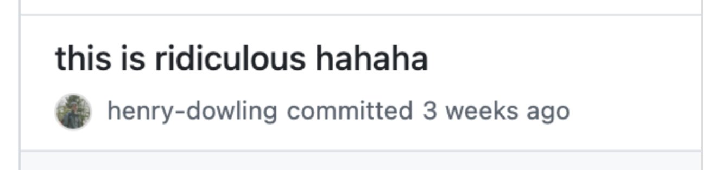
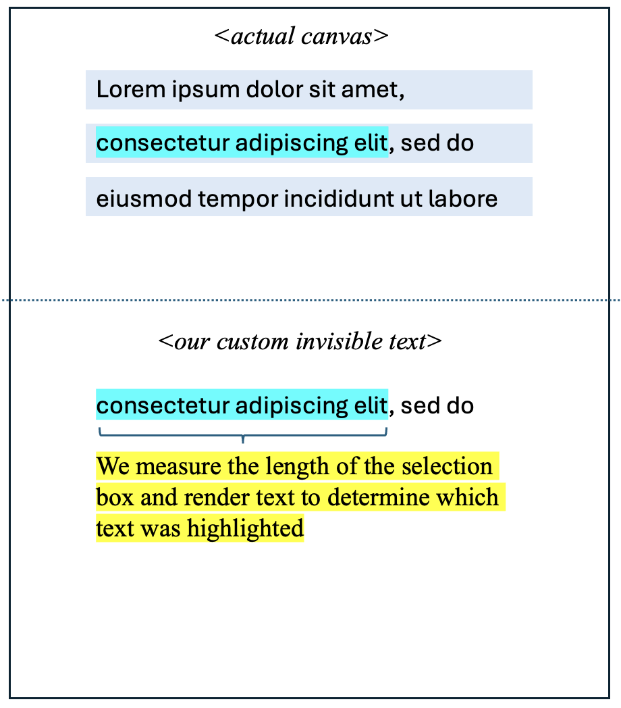

Autocomplete everywhere that reads your mind
As one of our explorations with AI memory at Fergana Labs, we built system-wide contextual autocomplete in every text box on your computer for MacOS. To hydrate it with context, we built a system to grab text from input fields via a11y APIs and screen OCR. We named it Codeswitch, and you can try it here![1]
In order to build this so that it works well on MacOS, we had to make some interesting / nonstandard design decisions. In this blog post, I'll talk through these decisions.
Using Accessibility tools to mock grey "ghost" text + replace text
Most of the standard autocomplete operations (suggested text, replacing text for "rephrase feature") are not possible without MacOS a11y APIs.

- We generate "ghost text" NSPanel by getting the element and cursor's caret position via AXUIElement Position Attributes
- We also get the bounds of the Panel with
AXSelection.capture, which allows us to render a panel that matches the size of the input field that the cursor is currently in. - For our "rephrase" feature, in order to insert a rephrase suggestion, we actually manually highlight text and then overwrite the text by copy-pasting, which yields a surprisingly smooth UX.
- Our abuse of a11y APIs unfortunately means that Codeswitch can never live on the app store!
Hijacking the system clipboard in order to actually add the suggestion on "tab"
- In order to add text on "tab", we manually append the text to the user's system clipboard, and then mock a cmd-v event in order to paste it.
- In order to ensure that the user doesn't lose the text that they just copied to overwriting, we also implemented a virtual clipboard similar to the Raycast clipboard history extension.
- In order to handle the case where text is added to the clipboard without CMD-C (for example, a button to click to copy in a browser), we regularly poll for clipboard changes in order to catch these events and add them to the user's virtual clipboard.
- We handle the "tab" shortcut, as well as intercepting CMD-C and CMD-X events, with Global keyboard shortcut interception via
NSEvent.addGlobalMonitorForEvents(matching:handler:)for a number of shortcuts, including tab.
Reverse engineering Google Docs' canvas-based rendering
It was important to us that the project works in Google Docs. However, Google Docs’ canvas-based rendering made all of our techniques for getting text (accessibility selection to get cursor position for grey text, read text, select text in order to paste over it) useless. As a workaround to get cursor positioning information, we wrote a chrome extension to help us get this information from the user. Unfortunately, that means users need to install the chrome extension for Codeswitch to work in Docs.
Then we had to figure out what text was selected. Since Google Docs doesn’t actually display any text elements in the browser, we reverse-engineered Google Docs’ API to grab the UI elements that store text within their custom rendering.
- To get cursor, we select for
.kix-cursor-karetin the DOM - To get text, we select
.kix-canvas-tile-selection > svg > rect
We found this discussion of how Google’s Canvas-based rendering extremely helpful — see this GitHub discussion.
Unfortunately, Google Docs renders each line in the canvas as a monolith, so we still needed to figure out what text was being rendered. So, given a cursor position in a line and a set of text in the line, we need to estimate which text was selected. To achieve this, we render actual text invisibly on the page, and then measure at which character the selection must start given its real position.
Learnings
- Our reverse-engineering approach really only worked because of how fast coding agents can work. With claude code, we were able to test many promising reverse-engineering approaches in parallel, which allowed us to find a winning strategy in a reasonable amount of time
- We built this in Swift in order to take advantage of accessibility APIs. Swift is awful and XCode is even worse. In hindsight, we should have used something like Tauri. Thanks to Charlie Holtz for the suggestion!
[1] If you're looking for an invite code and don't have one, you may be able to find one if you're clever enough ;)